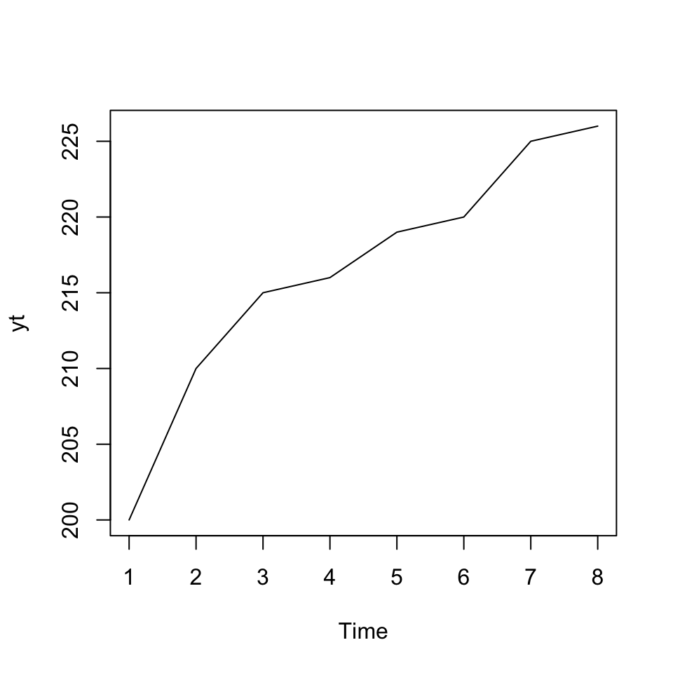
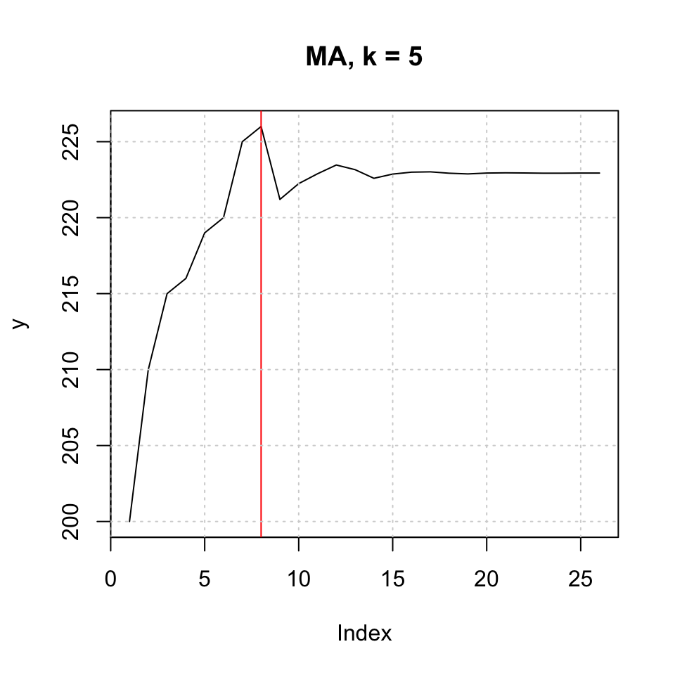

4.4 Exercises
This section contain exercises, hence the methods applied on data
4.4.1 p. 92 HW Problem 8
4.4.1.1 Moving Averages
df <- read_excel("Data/Week45/prob8p92HW.xlsx")
yt <- ts(df) #Rename and define as time series
ts.plot(yt) #We can plot the
We see that there is a trend in the data.
We can calculate the five period moving average by:
yt5c <- ma(yt #The time series
,order = 5 #Amount of periods to be evaluated
,centre = TRUE #We want the center value of the MA
)
yt5c## Time Series:
## Start = 1
## End = 8
## Frequency = 1
## [,1]
## [1,] NA
## [2,] NA
## [3,] 212.0
## [4,] 216.0
## [5,] 219.0
## [6,] 221.2
## [7,] NA
## [8,] NAHence we are able to produce moving averages based on the data. Notice, that the most recent MA is the prediction, hence being \(\hat{Y}_{t+1}\).
One could extend this, by adding this value to the time series and then calculate MA for the period hereafter. We see that the output of the table above is somewhat misleading, as the most recent MA predictinos, are not positioned in the end, but instead where the center actually is.
This problem is solvable using filter(). See the following chunk
k <- 5 #specify the order of the moving average
c <- rep (1/k,k) #remember that simple average is a weighted average with equal weights,
#you need to specify weights for the filter command to work
yt5<- filter(yt, c, sides = 1)
ts.plot(yt5)# "Plotting the MA'sFigure 4.4: 5k Moving Average
yt5 #The updated vector of MA's## Time Series:
## Start = 1
## End = 8
## Frequency = 1
## [,1]
## [1,] NA
## [2,] NA
## [3,] NA
## [4,] NA
## [5,] 212.0
## [6,] 216.0
## [7,] 219.0
## [8,] 221.2This we see, that scores are moved to the end, so even though it is the center of the MA, it is now presented as recent values.
For simple moving averages, one may do it in excel, it may be easier and quicker.
4.4.1.2 Exponential moving averages, normal, Holts and Winters
Simple and Holt-Winters exponential smoothing
Where;
- alpha is the smoothing parameter,
- beta tells you if you should account for a trend or not,
- gamma is responsible for the presence of a seasonal component in the model
fit <- HoltWinters(yt
,alpha = 0.4
,beta = FALSE
,gamma = FALSE)
plot(fit,xlim = c(1,nrow(df))) + grid(col = "lightgrey")## integer(0)legend("topleft",c("Observed","Fitted"),lty = 1,col = c(1:2))
Hence we see the smoothed values, where the higher alpha, the more will the fitted line track the changes in the observations.
We can now plot the forecast values:
plot(forecast(fit),xlim = c(1,nrow(df)+10))# + grid(col = "lightgrey")
legend("topleft",c("Observed","Forecast"),lty = 1,col = c("Black","Blue"))Figure 4.5: Forecast Exponential Smoothing
One see the confidence intervals of the forecast widening as we get further away from the actual values.
Now one may assess the accuracy:
accuracy(forecast(fit))## ME RMSE MAE MPE MAPE MASE ACF1
## Training set 8.001509 8.209102 8.001509 3.673623 3.673623 2.154252 0.1962194rm(list = ls())